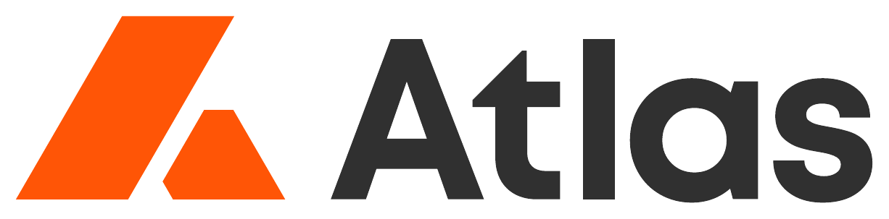

Onde a demanda passa na frente da oferta
4.990 municípios de fit ICP confirmado, cruzados contra o mapa real de gerenciadoras de risco (GR) credenciadas por seguradoras no Brasil — para responder onde vale colocar um consultor externo em campo.
Veredito
10.743 empresas com RNTRC ativo (fit estrutural confirmado)
0 gerenciadoras de risco sediadas no estado
Zero GR confirmado por 3 métodos (AXA, Porto Seguro, CNPJ/CNAE nacional). 7º maior mercado de seguro de carga do Brasil (R$ 43,4 mi em prêmio no 1º semestre/2026, dado SUSEP/SES) — maior que MT, GO, PE e CE. 4º lugar nacional em ocorrências de roubo de carga (205 casos, 2025) e líder do Nordeste em valor de prejuízo.
5.885 empresas com RNTRC ativo
2 GR pequenas fora da capital, nenhuma em Vitória
9º maior mercado de seguro de carga do Brasil (R$ 34,1 mi em prêmio, SUSEP/SES) — e a maior sinistralidade entre as UFs relevantes: 103% (sinistro paga mais que o prêmio arrecadado). Não aparece nos rankings de roubo de carga da NTC&Logística — a demanda vem do volume portuário/mineral (Vale, Porto de Tubarão), não de crime.
4.908 empresas com RNTRC ativo
0 gerenciadoras sediadas em toda a Região Norte, exceto Tocantins
Domina o prejuízo por roubo de carga da Região Norte (62,9%), mas o mercado de seguro ainda é pequeno em volume absoluto: 15º lugar nacional, R$ 10,2 mi em prêmio — cerca de 1/4 do de Bahia/ES. A oportunidade aqui é mais estrutural (região crescendo rápido, ainda sem oferta) do que um mercado grande já maduro esperando GR.
leads-outbound-production) está com Row Level Security desligado nas 13 tabelas públicas — qualquer chave anônima lê ou grava em leads, users etc. Não corrigido automaticamente; decisão e política de acesso ficam com o time.
A demanda, por UF
Fit estrutural confirmado (RNTRC ativo) por estado, ordenado do maior para o menor. A cor mostra se o estado já tem GR sediada ou não — os 27 estados foram checados, nenhum ficou sem veredito.
A oferta, por região
Todos os 27 estados, checados um a um contra as listas de credenciamento da AXA e Porto Seguro (reextraídas na íntegra), a base de CNPJs Econodata por setor, e sindicatos patronais de transportadoras.
| Região | Coberto | GRs sediadas (exemplos) | Vazio confirmado |
|---|---|---|---|
| Sudeste | SP · MG · RJ | ~30 em SP (Buonny, Brasil Risk, Skymark, Krona) + Gertran/Insígnia (MG) + Golden Service (RJ) | ES |
| Sul | SC · PR · RS | Angellira, Opentech, Elite GR (SC) · Global 5, Siga GR (PR) · Protege GR (RS) | — |
| Centro-Oeste | GO · MT · MS | Consultebras/Federal ST (GO) · GR Global + posto Buonny (MT) · Upper GR (MS) | DF |
| Nordeste | CE · AL · PE | GCI Risk (CE) · Verttice (AL, PE) · Seg Risco (SE, Aracaju — achada via CNPJ/CNAE) | BA · MA · PI · RN · PB |
| Norte | TO | TJ Gerenciamento (Araguaína) — único registro de toda a região | PA · AM · RO · AC · RR · AP |
Tamanho real do mercado, por UF (SUSEP)
Prêmio e sinistro direto dos ramos RCTR-C (0654) + RC-DC (0655) + RC-V (0659), 1º semestre/2026 — dado oficial extraído direto do sistema SES da SUSEP (não é estimativa; ver fonte no rodapé). Mostra que a lacuna de GR não é por falta de mercado segurável.
| UF | Posição | Prêmio direto (R$ mi) | Sinistralidade |
|---|---|---|---|
| São Paulo coberto | 1º | 781,8 | 57,1% |
| Paraná coberto | 5º | 94,8 | 59,9% |
| Bahia vazio | 7º | 43,4 | 55,8% |
| Mato Grosso coberto | 8º | 36,0 | 88,8% |
| Espírito Santo vazio | 9º | 34,1 | 103,4% |
| Goiás coberto | 10º | 30,8 | 73,5% |
| Pará vazio | 15º | 10,2 | 26,1% |
Leitura: Bahia e Espírito Santo já são mercados de seguro de carga maiores que Mato Grosso e Goiás — dois estados onde a AtlasGR já tem concorrência estabelecida. O vazio de GR ali não é por falta de mercado. Pará é a exceção: mercado pequeno em volume absoluto (15º lugar) — a oportunidade lá é mais estrutural/de crescimento do que um mercado maduro represado.
Ressalvas — leia antes de agir
- "Sede confirmada" reflete onde a GR está cadastrada junto à seguradora, não necessariamente o alcance operacional real. Algumas atendem remotamente por plataforma mesmo sem escritório local — trate "vazio" como sinal forte, não como prova absoluta de mercado livre.
- O mercado de seguradoras é nacional — qualquer seguradora subscreve carga em qualquer UF. A lacuna regional está na camada de GR, não na de seguro; por isso o cruzamento certo é demanda de transportadora × presença de GR, não × seguradora.
- Bahia e Pará foram revalidados numa segunda rodada: PDFs da AXA e Porto Seguro reextraídos na íntegra (não resumo), incluindo uma versão da lista Porto Seguro mais recente que a original — o vazio persiste. Sindicatos patronais de transportadoras (SETCEB-BA, SINDICARPA-PA) não citam nenhuma GR local em nenhuma comunicação. Duas pistas que pareciam contradizer isso (ICTS e Velox, citadas em notícias baianas) foram checadas e são prestadoras nacionais atuando remoto, não GR sediada.
- Os 7 estados antes "não verificados" (MA, PI, RN, PB, SE, ES, DF) foram fechados com a base de CNPJs Econodata (setor "Gerenciadora de Risco") como terceira fonte — retornou 0 empresas nos 7, e 2 em MS (controle de que o filtro funciona). Todos os 27 estados têm veredito agora; nenhum ficou em aberto.
- Ponto cego que continua real: o quadro de associados da GRISTEC (associação do setor) segue impossível de raspar — só grade de logos, sem nome/cidade pesquisável. E a cobertura de credenciamento é só de AXA e Porto Seguro; uma GR pequena credenciada apenas por Tokio Marine, Allianz, HDI ou Sompo passaria batido. Vale um contato direto com transportadoras locais antes de comprometer investimento.
- Quarta rodada de verificação — busca direta na base nacional de CNPJ (Receita Federal, 72,5 milhões de registros) por CNAE 8020-0/01, o código usado por 5 de 5 GRs já confirmadas (Consultebras, Federal ST, Global Rastreamento, Skymark, Federal Soluções). Esse CNAE sozinho é ruidoso — pega monitoramento de alarme residencial e rastreamento veicular genérico aos milhares — então o resultado foi filtrado por nome contendo "risco"/"gerenciadora". Confirma Bahia e Pará com zero candidatos mesmo nessa busca mais ampla (3ª fonte independente), mas corrige dois vereditos: Espírito Santo tem 2 GRs pequenas em Alfredo Chaves (nenhuma em Vitória) e Sergipe tem 1 candidata em Aracaju (SEG RISCO SEGURANÇA EM TRANSPORTES) que nenhuma fonte anterior via seguradora tinha capturado.
- Quinta rodada — cruzamento com roubo de carga (NTC&Logística, relatório 2025) e prêmio/sinistro oficial por UF (SUSEP/SES, dado direto de sistema, não painel estimado). Bahia: 4º lugar nacional em ocorrências de roubo, líder do Nordeste em prejuízo. Pará: domina o prejuízo da Região Norte (62,9%) mas a região ainda é pequena no total nacional. Espírito Santo: não aparece em nenhum ranking de roubo de carga — a maior sinistralidade do país (103%) provavelmente reflete perdas de outra natureza (avaria, transporte de minério/granel), não crime.
- Becos sem saída documentados para não repetir a busca: os Sincor estaduais de BA/PA/ES não publicam número de corretoras nem dado de mercado de carga local. O registro da Polícia Federal de empresas de segurança privada (escolta armada) não tem lista pública por estado — só consulta individual por CNPJ já conhecido, com login gov.br.